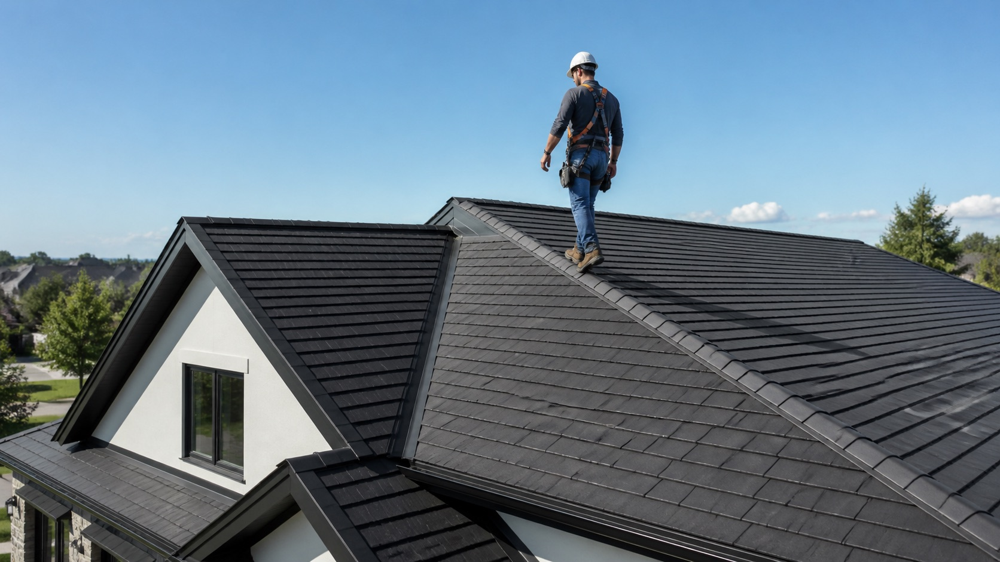
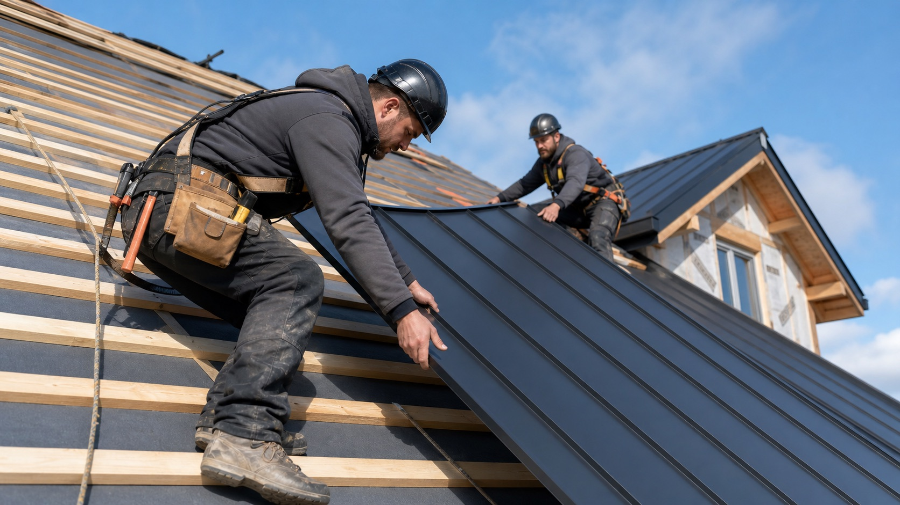
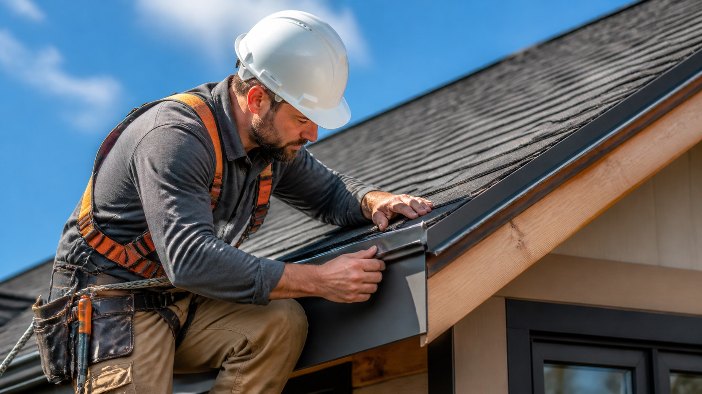
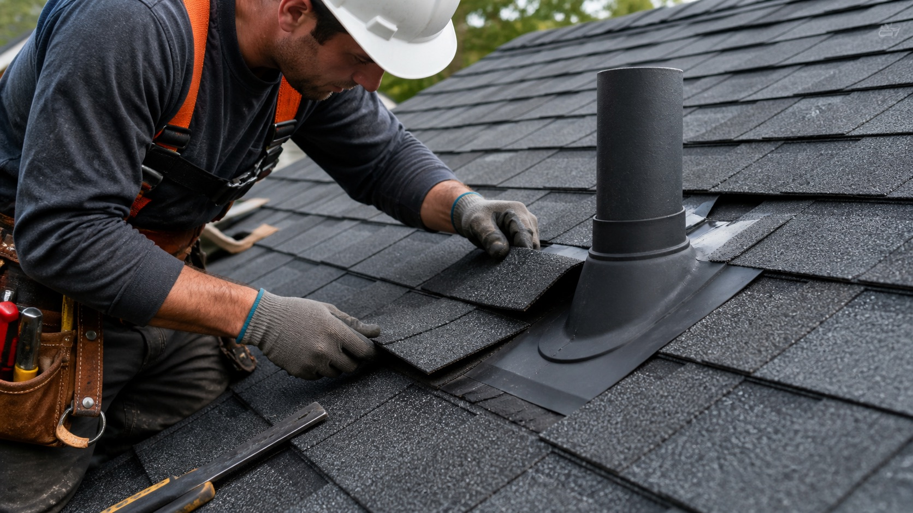

A replacement project is bigger than choosing a finish. It can involve the existing structure, materials, ventilation, weather, budget, and the character of the property.
Service guide / 02
Roof replacement.
Made clear.
— Roof Replacement
Get to know the replacement plan.
02
Replacement Works Best With a Plan
Compare materials, existing roof condition, ventilation, weather performance, and timing before the project becomes a quote.
Before you connect, gather what you see today, what you want to change, what needs to last, and which constraints matter most for timing and budget.
Clear replacement planning helps providers explain material options, project phases, warranties, ventilation, and the details that shape long-term roof performance.
Material Selection75%
Design Phase85%
Project Confidence95%
Roof Installation
Roof Replacement
Roof Repair
Emergency Roofing Services
Roof Replacement
Roof Repair
Emergency Roofing Services
Roof Installation
Installation planning covers the roof system, underlayment, ventilation, edges, and the details that keep new work aligned with the home.
Repair work starts with the visible issue, then follows nearby flashing, shingles, seams, vents, and water paths before the scope is set.
Regular maintenance helps extend roof life and prevent costly repairs. It can include clearing debris, inspecting for wear, resealing flashing, and addressing small issues before they spread.
Climb to New Heights with Roofly's Professional Services
A focused inspection helps compare deck condition, old flashing, ventilation, drainage, and any weak points before replacement planning starts.
Replacement planning brings materials, weather performance, schedule, cleanup, and warranty expectations into one clear project brief.
Homeowners and property managers may choose upgrades to improve energy efficiency, curb appeal, or durability. Options can include improved insulation, solar-ready planning, or more resilient roofing materials.
Leading Way In Roof Replacement Planning!
Roofly helps turn materials, ventilation, timing, cleanup, and warranty expectations into a clearer brief before you compare replacement providers.
How to Choose the Right Direction for a Roof Replacement
A full roof replacement is easier to compare when materials, ventilation, access, cleanup, and warranty expectations are clear from the start. Roofly helps turn those details into a practical project brief before you speak with providers.
Start a replacement request
Read the Roof
Replacement planning starts with the current roof condition, visible wear, ventilation, and the parts of the home that need protection.
01
Choose the System
Compare materials, underlayment, flashing, edge details, and long-term performance before the quote turns into a fixed scope.
02
Stage the Install
A clear plan keeps access, weather windows, delivery timing, cleanup, and daily communication easier for everyone involved.
03
Review the Finish
The final walkthrough should clarify details, documentation, warranty notes, and the maintenance rhythm for the new roof.
04Plan with context